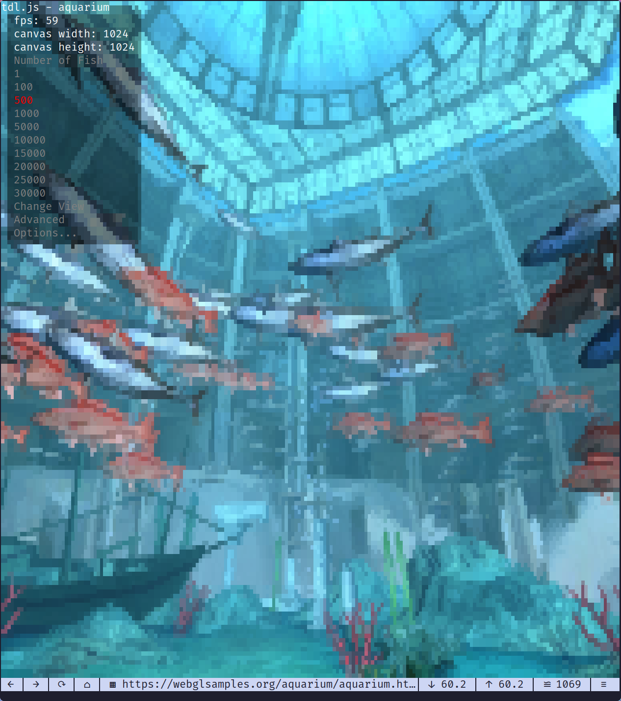
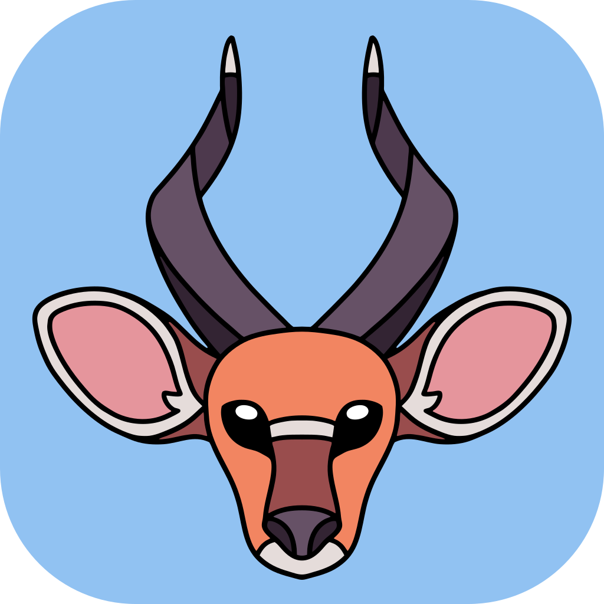
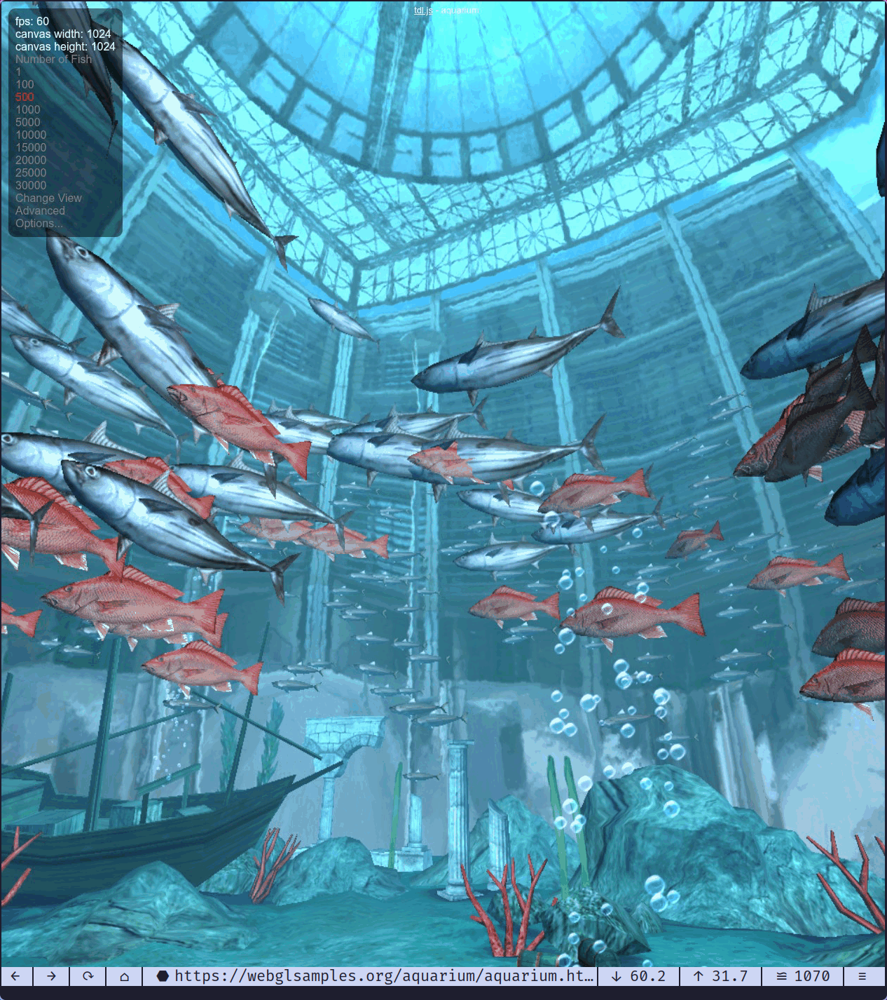
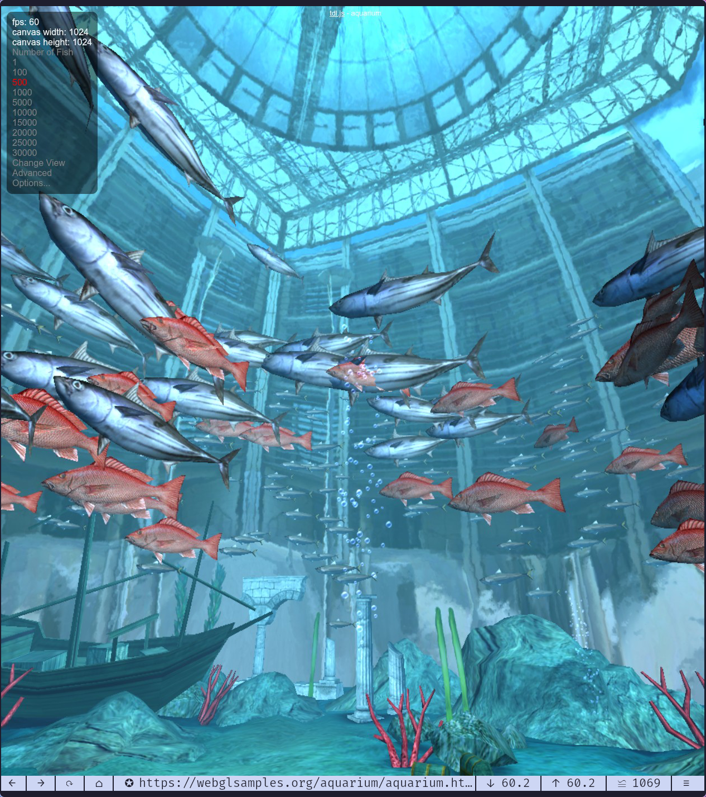

Universal floor
Block
Sextant 2x3 and quadrant 2x2 Unicode glyphs on any TTY, paired with the crisp DOM text overlay.

NyalaA web browser for the terminal
Nyala drives headless Chromium over the Chrome DevTools Protocol (CDP). It composites a crisp Unicode text layer over a block bitmap, or renders full pixels through Kitty and Sixel.
Runs on Linux, macOS, and Windows, down to a bare Linux console under KMSCON with no display server.
Three backends, one renderer
Nyala detects your terminal at startup and selects the highest-fidelity backend that it supports: Kitty, then Sixel, then Block. Press Alt+R to cycle backends live.

Sextant 2x3 and quadrant 2x2 Unicode glyphs on any TTY, paired with the crisp DOM text overlay.

Bitmap output with a temporally stable adaptive palette on terminals and tmux 3.6+ sessions.

POSIX shared-memory RGBA or direct PNG pass-through with no re-encoding.
WebGL Aquarium (2560x1440)
Nyala renders the full terminal surface (cols*cellW by rows*cellH) at native resolution instead of magnifying or downscaling the page.
Built for the TTY
Nyala streams HTML5, CSS, and JavaScript pages from headless Chromium while keeping text sharp and terminal input direct.
Read the architecture256 and grey modes fit 240 palette entries (OSC 4 indexes 16..255) to each frame and automatically fall back from truecolor under sustained terminal write pressure.OSC 52 copy (Alt+W, up to 74,994 bytes) work in the terminal.Daily workflow
Run headless Chromium locally with a persistent profile, or tunnel a laptop Chrome session into a remote SSH host.
nyala example.com
Launch headless Chromium with persistent cookies and logins in ~/.local/share/nyala/profile.
nyala --private example.com
Start a disposable session that ignores saved state.
ssh -R 9222:127.0.0.1:9222 devbox
Tunnel a local Chrome debugging port (--remote-debugging-port=9222 with a dedicated --user-data-dir) to a remote machine.
nyala --remote-debugging-url http://127.0.0.1:9222 example.com
Browse inside the remote SSH session using the logins on your laptop.
| Shortcut | Action |
|---|---|
| Alt+R | Cycle rendering backend (Block, Sixel, Kitty) |
| Alt+B | Cycle Block glyph mode (quadrant 2x2 and sextant 2x3) |
| Alt+C | Cycle Block colour mode (truecolor, 256, grey) |
| Alt+P | Toggle adaptive and static palettes (256 and grey Block modes) |
| Ctrl+F | Find on page (Enter searches, Up and Down step matches, Esc closes) |
| Alt+W | Copy selection to the terminal clipboard via OSC 52 |
| Alt+Left / Alt+Right | Go back and forward in page history |
| Ctrl+Q | Quit Nyala |
Get started
Each repository is signed and keeps Nyala up to date.
bin install github.com/wimpysworld/nyala
docker run --rm ghcr.io/wimpysworld/nyala --version
- uses: wimpysworld/nyala@v0
The Nix package includes Chromium. Every other install method needs Chrome or Chromium on your system, resolved from --browser, NYALA_BROWSER, CHROME_PATH, or PATH.